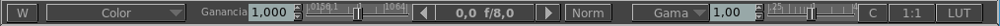

La barra principal

La barra principal te permite realizar varias operaciones comunes a la muestra de la imagen, así como abrir otras ventanas.
Consiste, de izquierda a derecha, en:
El boton W
que está por las Ventanas y cliqueando en el listará todas las posibles ventanas que pueden ser creadas. Actualmente, estas incluyen:
El display de Canal
te dice que canal estás actualmente viendo (Color en la foto de arriba).
Los canales usuales pueden ser uno de R,G,B,A y Lumma o Alpha Sobreimpresa sobre RGB.
Sin embargo, para formatos de imágenes que lo soportan como OpenEXR o Photoshop's PSD, puede también listar todas las capas que hay en la imagen.
El control de Ganancia
te permite cambiar la ganancia de la imagen que esta siendo mostrada.
El control de F-Stop
es otra forma de controlar la ganancia. Funciona en F-Stops, que es un método común usado en fotografía y film para ajustar la exposición de la cámara.
Este control no está disponible cuando se usa OCIO.
El boton de Normalización
te permite normalizar la imagen dentro del rango de 0,0 a 1,0. Su uso mas común es para ver bien canales de profundidad en Z o mapas de sombras (shadow maps).
Este control no está disponible cuando se usa OCIO.
El Espacio de Color de Entrada
te permite setear el espacio de color de entrada de OCIO para la imagen mostrada.
Esto funciona en conjunto con el seteo de Gamma->Lut.
Este control no está disponible cuando no se usa OCIO.
El control de Gama
te permite modificar la gama del display.
Además cuando OCIO está activado, te permite seleccionar un display y una vista para la visión en el monitor.
The control de Campo
te permite mostrar la image como un cuadro completo o como un campo de video.
El botón 1:1
te permite permutar una compensación para la proporción del pixel de la imagen.
El botón LUT
te permite permutar la corrección de color de 3D LUT (Look Up Table) para emular
otro dispositivo en tu monitor.
La barra principal puede ser mostrada y ocultada usando la tecla de control F1.